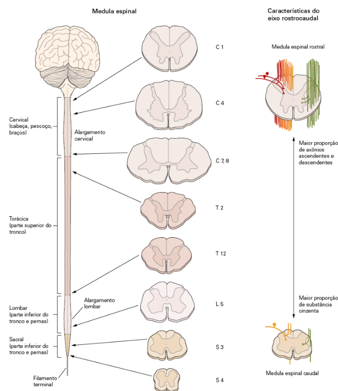
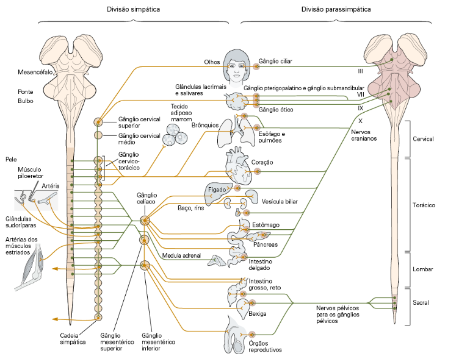
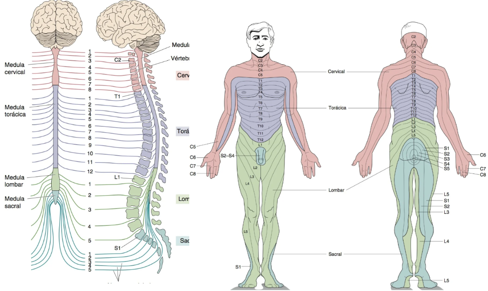
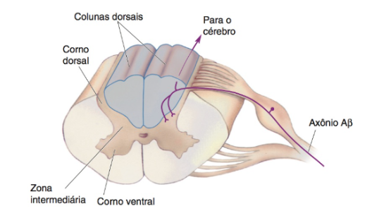
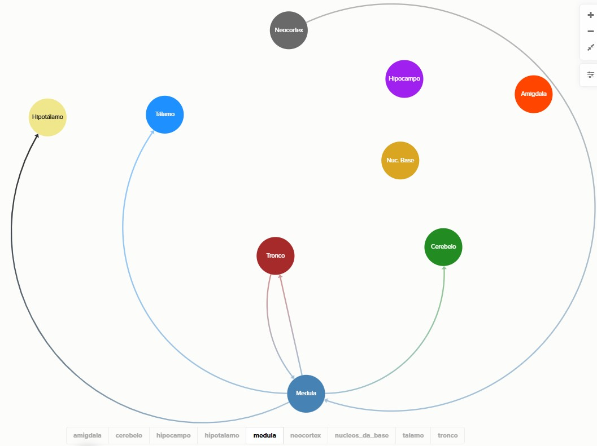

<main>
    <section class="section">
        <div class="container narrow">
            <h1 class="">Medula - Movimento é Vida</h1>
            <article class="doc-content">
                <div class="doc-content">
                    <p>
                        A medula espinhal é uma estrutura cilíndrica que se estende do bulbo raquidiano (tronco encefálico) até a região lombar da
                        coluna vertebral. Ela é protegida pelas vértebras e envolvida por meninges e líquido cefalorraquidiano. A medula espinhal é
                        composta por substância cinzenta, que contém corpos celulares de neurônios, e substância branca, que é formada por fibras
                        nervosas mielinizadas que transmitem sinais entre o cérebro e o corpo.
                        
                    </p>

                    <h2>Funções</h2>
                    <ul>
                        <li>Transmissão de informações somatossensoriais e viscerais do corpo (exceto cabeça) para o encéfalo.</li>
                        <li>Condução de comandos motores do córtex e tronco encefálico, até os músculos dos membros e tronco.</li>
                        <li>
                            Processamento local e geração de reflexos (somáticos e autonômicos), garantindo respostas rápidas sem necessidade de
                            processamento cortical. Importante ressaltar que esses núcleos não são independentes, já que são modulados por centros
                            superiores.
                        </li>
                        <li>Transmissão de informações proprioceptivas para o cerebelo, permitindo ajustes e correções de movimentos.</li>
                        <ul>
                            <li>Membros inferiores - trato espinocerebelar - ligação direta.</li>
                            <li>Membros superiores - trato cuneocerebelar - ligação indireta, via Bulbo.</li>
                        </ul>
                        <li>
                            Os CPGs (Central Pattern Generators), localizados na medula lombar, geram padrões rítmicos de locomoção (como andar) mesmo
                            sem controle cortical direto, no entanto o cerebelo atua de forma a controlar a qualidade, precisão e adaptação do
                            movimento. A medula gera o padrão, mas é o cerebelo que o torna funcional no mundo real.
                        </li>
                        <li>
                            Centros de comandos simpáticos e parassimpáticos (sacral).
                            
                        </li>
                    </ul>

                    <h2>Partes Constituintes</h2>
                    <p>
                        
                    </p>
                    <ul>
                        <li>Cervical - percepção sensorial e função motora do pescoço, braços e porção posterior da cabeça.</li>
                        <li>Torácica - inervam a porção superior do tronco.</li>
                        <li>Lombar - inervam a porção inferior do tronco, as costas e as pernas.</li>
                        <li>Sacral - inervam a porção inferior do tronco, as costas e as pernas.</li>
                    </ul>

                    <h2>Organização Substância Cinzenta</h2>

                    <ul>
                        <li>
                            Todas as formas de informação sensorial do tronco e dos membros entram na medula espinhal, que apresenta uma região
                            central de substância cinzenta em formato de H (borboleta) onde os corpos celulares dos neurônios estão localizados.
                        </li>
                        <li>
                            A maior parte dos axônios descendentes originados no encéfalo termina no nível cervical, com quantidades progressivamente
                            menores de vias seguindo em direção aos níveis mais baixos da medula. Assim, o número de fibras na substância branca é
                            maior nos níveis cervicais (onde está a maior parte das fibras ascendentes e descendentes) e menor nos níveis sacrais.
                            Como resultado, a região sacral da medula possui bem menos substância branca do que cinzenta, enquanto a região cervical
                            tem mais substância branca do que cinzenta.
                        </li>
                        <li>
                            A substância cinzenta é cercada por uma substância branca formada por axônios mielinizados que realizam conexões tanto
                            longas quanto curtas. A substância cinzenta de cada lado da medula é dividida em cornos dorsais (posteriores), cornos
                            ventrais e zonas intermediárias.
                            <br/><br/>
                            
                        </li>
                            
                        
                        <li>Corno dorsal - aferências sensoriais</li>
                        <li>
                            Zona intermediária - funciona como um “mini-centro de decisão local”, capaz de tratar estímulos de forma rápida, sem
                            esperar a análise cortical, no entanto também coordena a execução de comandos recebidos do encéfalo.
                        </li>
                        <li>Corno ventral - projetam seus axônios para inervar os músculos.</li>
                        <li>Corno lateral - especializado em comandos autonômicos, sistema simpático e parassimpático.</li>
                        <li>Colunas dorsais (branca) - feixes de axônios ascendentes (epicríticos)</li>
                        <li>Colunas laterais (branca)</li>
                        <ul>
                            <li>ascendente - protopáticos (dor e temperatura) e propriocepção inconsciente</li>
                            <li>descendente - controle e ajuste motor</li>
                        </ul>
                        <li>Colunas ventrais (branca)</li>
                        <ul>
                            <li>ascendente - tato grosseiro e pressão</li>
                            <li>descendente - controle motor, postura e equilíbrio.</li>
                        </ul>
                        <li>
                            A substância cinzenta da medula espinal tem um aspecto segmentado, não é um tecido totalmente contínuo e homogêneo como
                            parece num desenho em corte. As colunas aparecem em grupos ou núcleos segmentares, que se repetem ou desaparecem em certos
                            níveis da medula.
                        </li>
                    </ul>

                    <h2>Aferências e Eferências</h2>
                    <p>
                        <span>1 - Visite o link </span
                        ><span
                            ><a
                                href="https://www.google.com/url?q=https://kumu.io/gdms/snc%23integracao-aferencias-e-eferencias/aferencias-eferencias&amp;sa=D&amp;source=editors&amp;ust=1761390868345874&amp;usg=AOvVaw0R7snreWB24_2CXfjbEtWf"
                                >https://kumu.io/gdms/snc#integracao-aferencias-e-eferencias/aferencias-eferencias</a
                            ></span
                        ><span> </span>
                    </p>
                    <p><span>2 - Selecione na parte inferior, nos botões de filtro a Medula.</span></p>
                    <p>
                        <span
                            >3 - Clicando na aresta de conexão, que possui direção, será possível visualizar detalhes sobre a conexão, veja a imagem
                            abaixo:</span
                        >
                    </p>
                    <p>
                        <span></span>
                    </p>
                    <p><span></span></p>
                    <h4>Importante</h4>
                    <p>
                        <i
                            >Estudos neurofisiológicos têm demonstrado que nos núcleos da coluna dorsal e talâmicos ocorre uma transformação
                            considerável da informação. Como regra, a informação é alterada a cada vez que passa por sinapses no encéfalo. Os
                            neurônios tanto dos núcleos do tálamo como dos núcleos da coluna dorsal são controlados por aferências do córtex cerebral.
                            Consequentemente, a eferência do córtex pode influenciar a aferência para o próprio córtex.
                        </i>
                    </p>

                    <h2>Disfunções</h2>
                    <p></p>
                </div>
            </article>
        </div>
    </section>
</main>
